Other Projects and Activities
Hexapod robot
A hexapod robot created as an internship project. It has 3 DoF per leg, driven by Dynamixel AX-12A each. The robot is controlled by STM microprocessor that calculates the trajectories for each leg and for each joint online. It is equipped with a webcam and is able to follow colour objects.
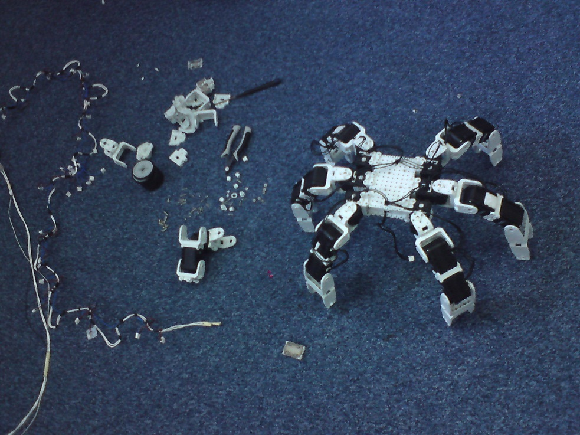 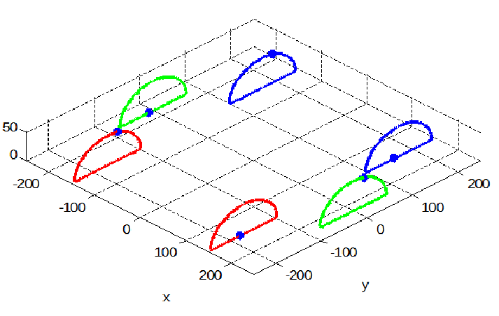
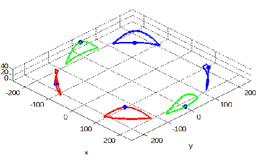
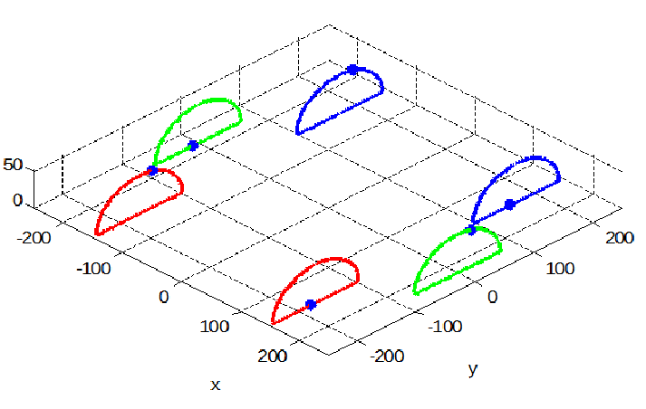
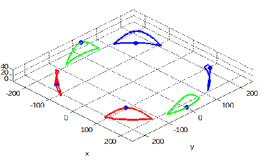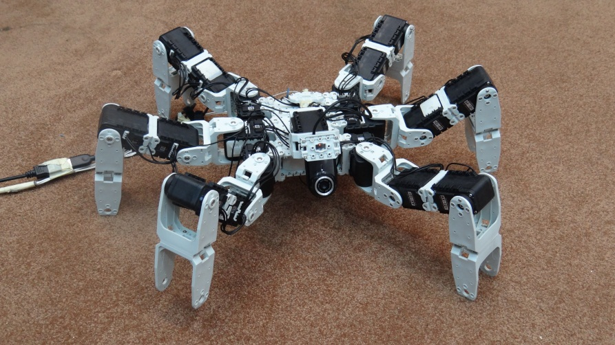
SpaceShooter Game
An android game written for one of the university projects in cooperation with JC. Find the code here.
Gimp anaglyph 3D images
You can take 3D pictures with an ordinary camera, even with your phone. All you need to do is to take two pictures from different perspectives, one corresponding with left and another corresponding with your right eye. Then extract the intensity from both, align them and save as red and cyan components. Then you can enjoy the depth in your photos using anaglyph glasses. Seems to be trivial, however aligning the pictures is not that simple and takes a lot of time. For that reason I have written a Gimp plugin that creates perfectly aligned 3D images for you, all you need to do is to show 4 key points.
Some of my photos below, click on them to zoom-in. You can use a glasses like this to watch them: 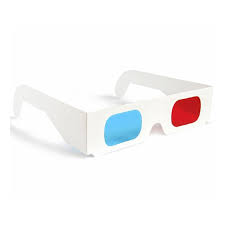
{kind=link}
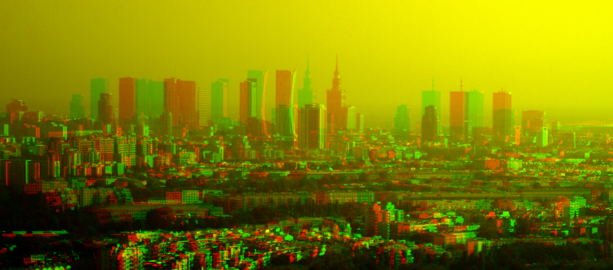
{kind=link}
{kind=link}
{kind=link}
{kind=link}
Find the source of the plugin here: Anaglyph 3D plugin for Gimp
Jewellery
Even if self-made jewellery is not so fancy as the one you can buy in one if the jewellery shops, making it on your own gives it an additional dimension. Something that can not be bought. Thus for the most important women I make jewellery for my own. Each one is unique and contains a part of myself. For my projects I use mostly silver but recently I have tried to mix it with iron based meteorites.
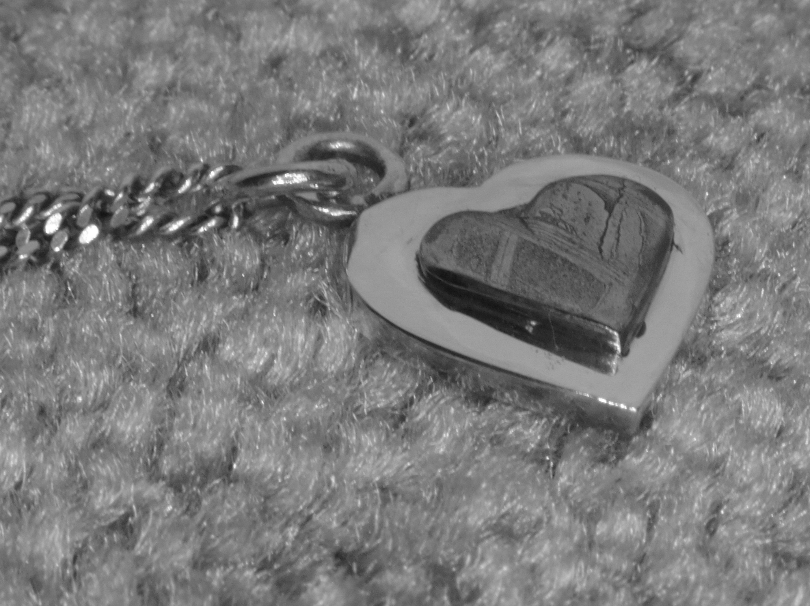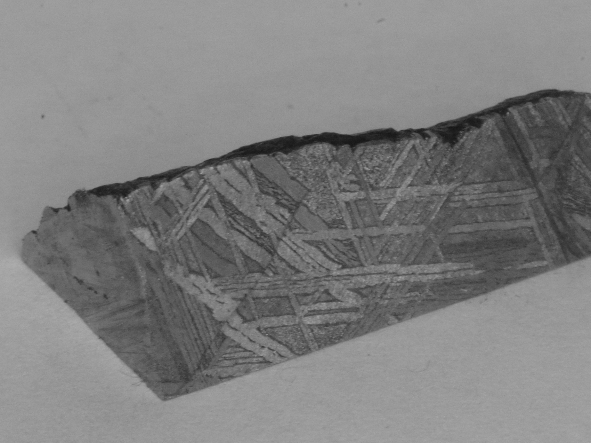 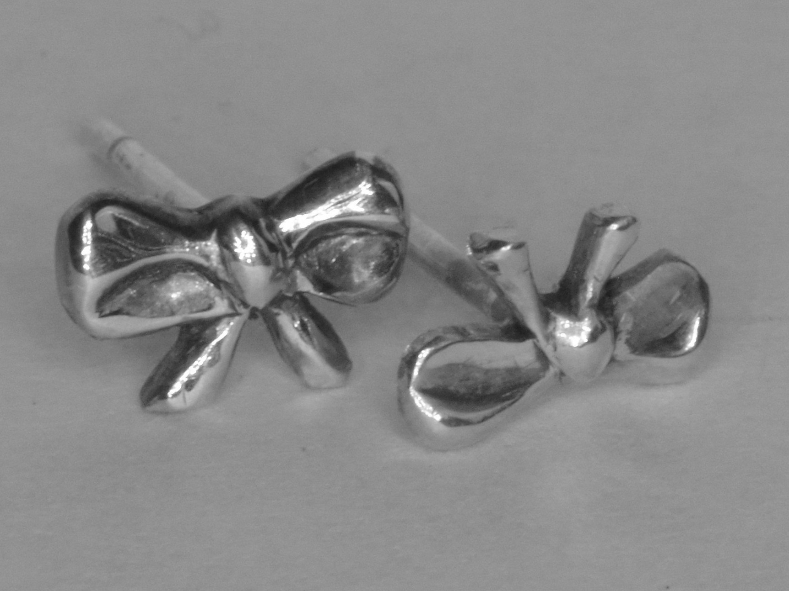
 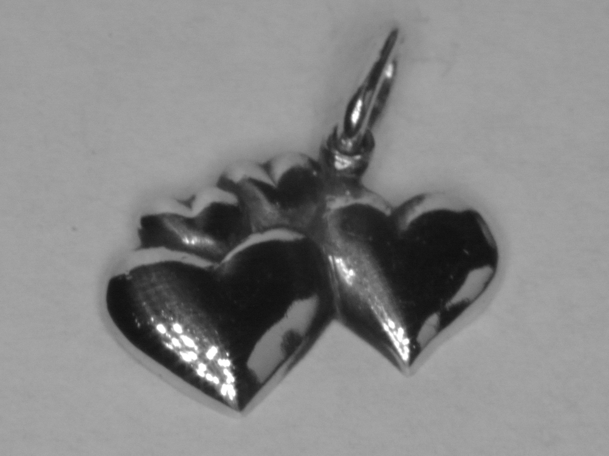
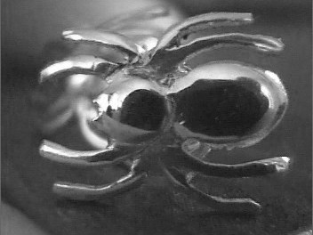
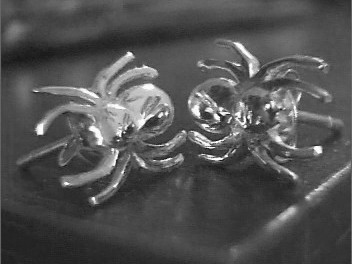
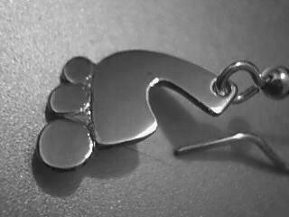
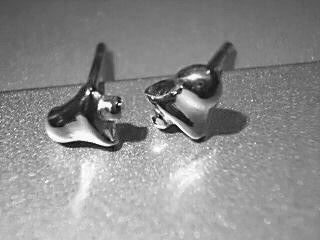
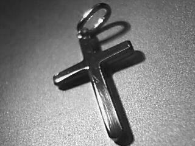
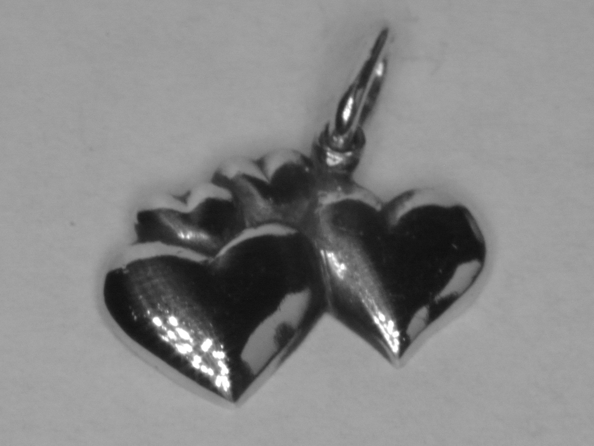
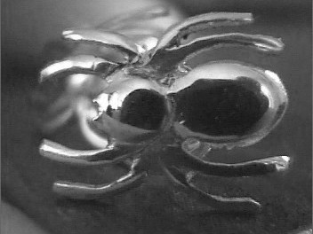
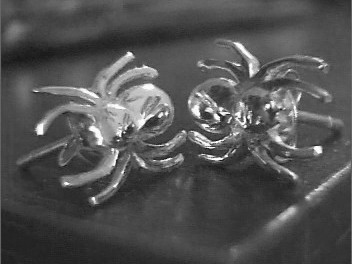
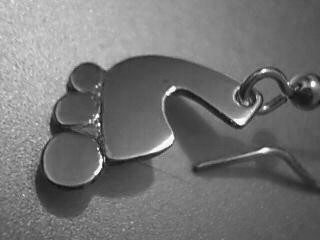
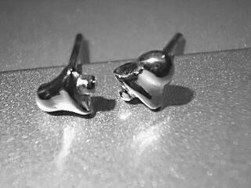
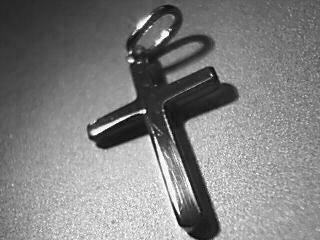